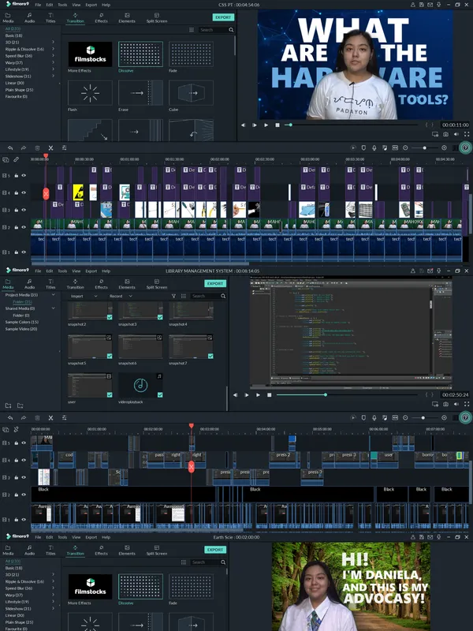
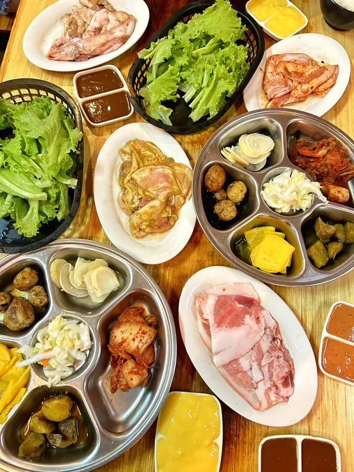
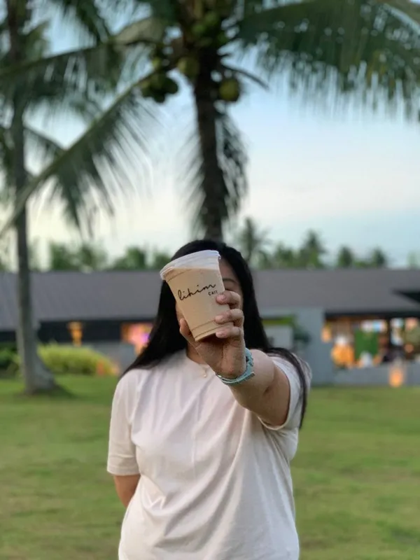
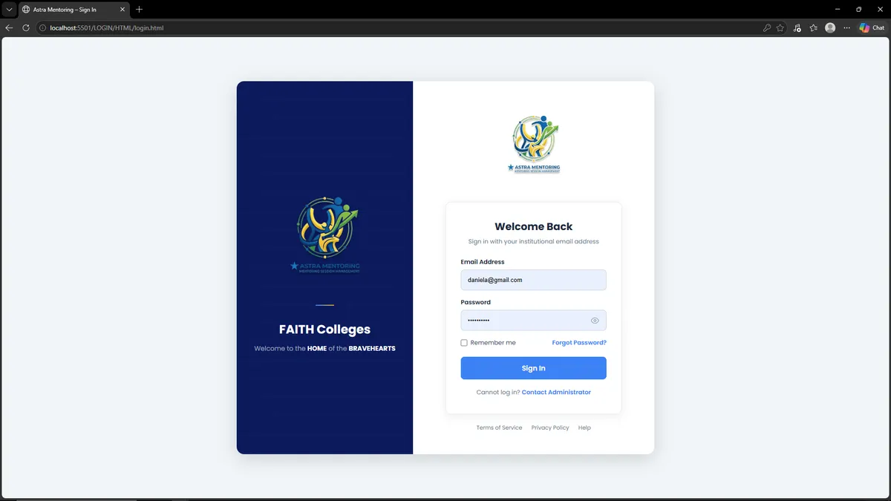
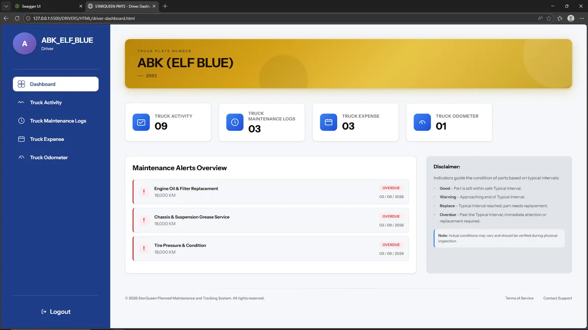
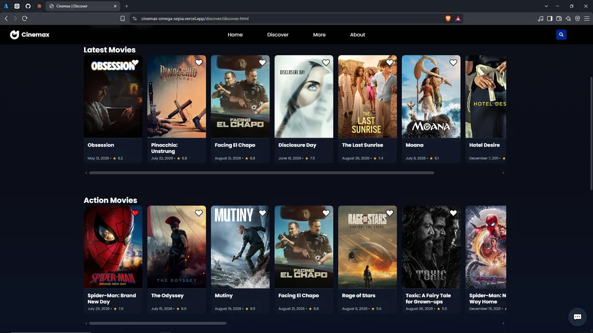

Daniela Barranda
4th year IT student at FAITH Colleges — building full-stack web apps and exploring UI/UX design.
Hi, I'm Daniela Nicole Barranda, a BS Information Technology student who enjoys turning real problems into working web applications. I've led teams that built a QR-based mentoring system for our college and a deployed maintenance tracker for a private company. I'm looking for an OJT or junior role where I can contribute to real projects, keep learning, and grow as a developer.
Santiago, Malvar, Batangas, Philippines
Education
College
First Asia Institute of Technology and Humanities (FAITH)
Tanauan City, Batangas
College of Computing and Information Technology
Bachelor of Science in Information Technology
2023 – Present
Consistent Dean's Lister
Education
Senior High School
First Asia Institute of Technology and Humanities
Fidelis Senior High School
Tanauan City, Batangas
Technical-Vocational-Livelihood Track
Information and Communications Technology Strand
2021 – 2023
Class Secretary (2021-2022)
Class President (2022-2023)
With Honors (2021-2023)
Technical Skills
- Computer Hardware & Software Troubleshooting
- System Testing, Bug Identification & Fixing
- Version Control & Collaboration (Git, GitHub)
- UI/UX Design & Prototyping (Figma)
- Microsoft Office Suite & Google Workspace
- Web Development (HTML, CSS, JavaScript)
- Backend Development (ASP.NET, C#)
- Database Management (Microsoft SQL Server, MariaDB, Supabase)
- Cloud Deployment (Microsoft Azure, AWS EC2, Vercel)
- Basic Java and C++
- AI-Assisted Development (ChatGPT, Claude)
- Graphic Design & Video Editing (Canva, CapCut)
Professional Experience
Digital Literacy Volunteer
Aug 2023CLICK Program, FAITH Colleges — Tanauan City, Batangas
- Taught senior barangay workers from Darasa, Tanauan, Batangas to use Microsoft Word, PowerPoint, and Gmail, turning technical concepts into simple, practical instruction.
- Adapted explanations to each learner's pace and comfort level, strengthening my patience and communication with non-technical users.
IT Support Intern (Work Immersion)
Jan 2023 - Feb 2023MIS Department, FAITH Colleges — Tanauan City, Batangas
- Completed 160 hours of hands-on IT support, troubleshooting hardware and software issues across classrooms, laboratories, and administrative offices.
- Diagnosed and resolved system errors, software conflicts, and connectivity issues on lab and staff computers.
- Assisted with preventive maintenance, computer assembly, audio-visual setup, and network troubleshooting to keep systems ready for daily school operations.
- Collaborated with the MIS team to prioritize and act on support requests during peak activity periods such as school events and examinations.
- Received Certificate of Completion.
Certifications
Hobbies
Outside of coursework and projects, I enjoy documenting everyday moments through photography and videography — a habit that doubles as hands-on practice with the same editing tools I use professionally, Canva and CapCut. I like refining raw footage into something clean and presentable before sharing it, which keeps my eye for detail sharp.
When I'm not creating, I recharge with a good show, an iced coffee, or catching up with close friends and family over food — small rituals that help me stay balanced and bring fresh energy back to my work.



PORTFOLIO
Projects
A selection of projects I've worked on, from full-stack web applications to database-driven systems and UI/UX design. On most of them I served as Team Lead and Lead Developer, guiding the team and owning the technical implementation.

AstraMentoring
Capstone Project · Team Lead · 2026 · Ongoing
Web-based Mentoring Management System for FAITH Colleges, developed under a Memorandum of Agreement. It centralizes mentoring operations with role-based dashboards, session scheduling, and dynamic QR-code attendance monitoring.

StarQueen PMTS
View Project ↗Team Lead · 2026 · Deployed
Preventive Maintenance and Tracking System built under a Memorandum of Agreement for Starqueen Company, a private organization in San Pedro, Darasa. It monitors vehicle maintenance, tracks parts and expenses, and sends automated alerts for overdue maintenance.

CineMax
View Project ↗Team Project · 2025 · Deployed
Interactive movie discovery website that recommends films based on the user's mood and current weather. It integrates multiple APIs to show movie details, trailers, and links to the platforms where each film can be watched.
NewtonIQ
View Project ↗Team Lead · 2025 · Deployed
Interactive web-based calculator for Impulse and Momentum that provides step-by-step solutions, tutorials, and lessons to help users understand the formulas, computation process, and how each answer is derived.
Kraby Kitchen
Team Lead · 2024 · Local Deployment
Full-stack Restaurant Order Management System with full CRUD and database integration for managing menu items and customer orders, covering browsing, order placement, and admin workflows.
Let's Work Together
I'm open to OJT and junior developer opportunities. The quickest way to reach me is by email, and I'm happy to share more about any of my projects.
Based in Batangas, Philippines